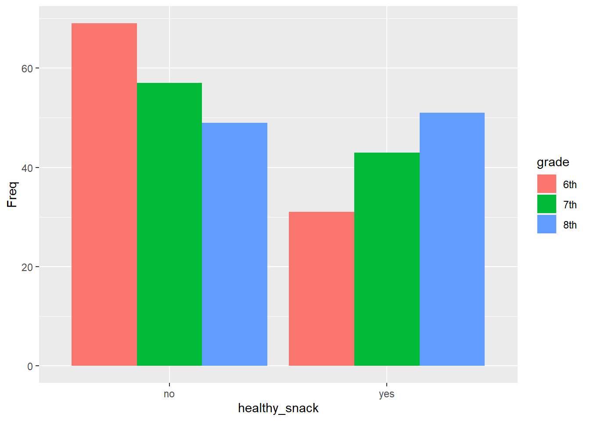
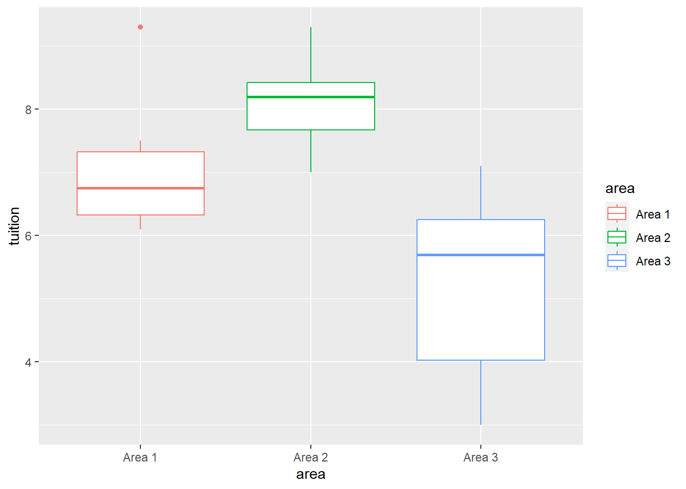

Code
library(tidyverse)
library(kableExtra)
library(readxl)
library(lsr)Laura Collazo
March 23, 2023
The data for the first question is shown below.
| surgical_procedure | sample_size | mean_wait_time | standard_deviation |
|---|---|---|---|
| Bypass | 539 | 19 | 10 |
| Angiography | 847 | 18 | 9 |
The 90% confidence interval for the actual mean wait time for patients receiving a bypass is:
[1] 18.29029 19.70971The 90% confidence interval for the actual mean wait time for patients receiving an angiography is:
[1] 17.49078 18.50922The confidence interval is narrower for the angiography.
The data for question two is shown below.
| sample_size2 | voted_yes | voted_no |
|---|---|---|
| 1031 | 567 | 464 |
The point estimate, p, for the proportion of all adult Americans who believe a college education is essential for success is:
A 95% confidence interval for p is:
[1] 0.5195839[1] 0.5803191What this tells us is at the 95% confidence interval between 51.95839% and 58.03191% of the population of adult Americans would believe a college education is essential for success.
The size of sample the financial aid office should have to be able to estimate the mean cost of textbooks per semester for students is shown below. It is found using a confidence level of 95%, a range of $170, and knowing they want to be within $5 of the true population mean.
The below shows the results of a one-sample t-test which tests whether the mean income of female employees ($410) differs from the mean income of all senior-level workers ($500).
One-sample t-tests assume that the population distribution is normal and also that the observations in the sample are generated independently of one another.
One sample t-test
Data variable: data4
Descriptive statistics:
data4
mean 410.000
std dev. 90.000
Hypotheses:
null: population mean equals 500
alternative: population mean not equal to 500
Test results:
t-statistic: -3
degrees of freedom: 8
p-value: 0.017
Other information:
two-sided 95% confidence interval: [340.82, 479.18]
estimated effect size (Cohen's d): 1 The results of this T-test is statistically significant as the p-value is below .05. This means we can reject the null hypothesis.
The p-value when the mean is less than 500 is below.
One Sample t-test
data: data4
t = -3, df = 8, p-value = 0.008536
alternative hypothesis: true mean is less than 500
95 percent confidence interval:
-Inf 465.7864
sample estimates:
mean of x
410 The results of this t-test are significant as the p-value is below .05. This means we can reject the null hypothesis that the true mean is not less than 500.
The p-value when the mean is greater than 500 is below.
One Sample t-test
data: data4
t = -3, df = 8, p-value = 0.9915
alternative hypothesis: true mean is greater than 500
95 percent confidence interval:
354.2136 Inf
sample estimates:
mean of x
410 The results of this test are not significant as the p-value is greater than .05. This means we cannot reject the null hypothesis that the true mean is not greater than 500.
Th first step for this question is to find the standard deviation. It is shown below.
[1] 316.2278The below shows the t and p-value for Jones.
One sample t-test
Data variable: data5_j
Descriptive statistics:
data5_j
mean 519.500
std dev. 316.228
Hypotheses:
null: population mean equals 500
alternative: population mean not equal to 500
Test results:
t-statistic: 1.95
degrees of freedom: 999
p-value: 0.051
Other information:
two-sided 95% confidence interval: [499.877, 539.123]
estimated effect size (Cohen's d): 0.062 The below shows the t and p-value for Smith.
One sample t-test
Data variable: data5_s
Descriptive statistics:
data5_s
mean 519.700
std dev. 316.228
Hypotheses:
null: population mean equals 500
alternative: population mean not equal to 500
Test results:
t-statistic: 1.97
degrees of freedom: 999
p-value: 0.049
Other information:
two-sided 95% confidence interval: [500.077, 539.323]
estimated effect size (Cohen's d): 0.062 The above indicates the results of Jones’ study (p = .051) are not statistically significant and the results of Smith’s study are statistically significant (p = .049) when α = 0.05.
I am not yet certain of how to describe the misleading aspects of reporting the result of a test as “P is < or = to 0.05” versus “P is > 0.” Perhaps this has to do with the importance of saying that the null hypothesis is rejected if p is statistically significant rather than saying we accept the null hypothesis as true if p is not statistically significant as we should always assume the null hypothesis is true. I think this question is asking for something different than this, though. I look forward to seeing the answer to this question so I can learn from it!
The data for question 6 is shown below. A response of yes indicates a healthy snack was chosen after school.
6th 7th 8th
no 69 57 49
yes 31 43 51The null hypothesis for question 6 is that middle school students choosing a healthy snack is independent of grade level. The test that should be used to determine if we can reject the null hypothesis is a chi-square test. This test has been chosen as it’s used to determine when there’s an association between two categorical values. The results of the test are below.
Pearson's Chi-squared test
data: data6$healthy_snack and data6$grade
X-squared = 8.3383, df = 2, p-value = 0.01547
We can reject the null hypothesis because the p-value is below 0.05. This tells us that choosing a healthy snack is not independent of grade level.
Furthermore, the X-squared value, as seen below, is higher than the critical value so the null hypothesis can be rejected.
The data for question 7 is shown below. Each tuition value is the per-pupil cost in thousands of dollars for cyber charter school tuition.
| area | tuition |
|---|---|
| Area 1 | 6.2 |
| Area 1 | 9.3 |
| Area 1 | 6.8 |
| Area 1 | 6.1 |
| Area 1 | 6.7 |
| Area 1 | 7.5 |
| Area 2 | 7.5 |
| Area 2 | 8.2 |
| Area 2 | 8.5 |
| Area 2 | 8.2 |
| Area 2 | 7.0 |
| Area 2 | 9.3 |
| Area 3 | 5.8 |
| Area 3 | 6.4 |
| Area 3 | 5.6 |
| Area 3 | 7.1 |
| Area 3 | 3.0 |
| Area 3 | 3.5 |
The null hypothesis for question 7 is that the mean cyber charter school tuition cost per-pupil is the same in all areas. The test that should be used to determine if we can reject the null hypothesis is an ANOVA. This test has been chosen as it’s used to compare the means of two or more independent groups. The results of the test are shown below.
Df Sum Sq Mean Sq F value Pr(>F)
area 2 25.66 12.832 8.176 0.00397 **
Residuals 15 23.54 1.569
---
Signif. codes: 0 '***' 0.001 '**' 0.01 '*' 0.05 '.' 0.1 ' ' 1
We can reject the null hypothesis because the p-value, Pr(>F), is less than .05. This tells us that at least one area has a tuition mean that is different from the others.
---
title: "DACSS 603 Homework 2"
author: "Laura Collazo"
description: "Homework 2 for DASS 603."
date: "03/23/2023"
format:
html:
toc: true
code-fold: true
code-copy: true
code-tools: true
categories:
- hw2
- desriptive statistics
- probability
- Laura Collazo
---
# Libraries
```{r, echo=T, message=FALSE}
library(tidyverse)
library(kableExtra)
library(readxl)
library(lsr)
```
# Question 1
The data for the first question is shown below.
```{r, echo=T}
surgical_procedure <- c("Bypass", "Angiography")
sample_size <- c(539, 847)
mean_wait_time <- c(19, 18)
standard_deviation <- c(10, 9)
data <- data.frame(surgical_procedure, sample_size, mean_wait_time, standard_deviation)
kable(data) %>%
kable_styling()
confidence_level <- .90
```
The 90% confidence interval for the actual mean wait time for patients receiving a bypass is:
```{r, echo=T}
# calculate confidence interval for "Bypass"
bypass_se <- 10 / sqrt(539)
bypass_tail <- (1-confidence_level)/2
bypass_t <- qt(p = 1 - bypass_tail, df = 539 -1)
bypass_ci <- c(19 - bypass_t * bypass_se,
19 + bypass_t * bypass_se)
bypass_ci
```
The 90% confidence interval for the actual mean wait time for patients receiving an angiography is:
```{r, echo=T}
# calculate confidence interval for "Angiography"
angi_se <- 9 / sqrt(847)
angi_tail <- (1-confidence_level)/2
angi_t <- qt(p = 1 - angi_tail, df = 847 -1)
angi_ci <- c(18 - angi_t * angi_se,
18 + angi_t * angi_se)
angi_ci
```
The confidence interval is narrower for the angiography.
# Question 2
The data for question two is shown below.
```{r, echo=T}
sample_size2 <- 1031
voted_yes <- 567
voted_no <- (sample_size2 - voted_yes)
data2 <- data.frame(sample_size2, voted_yes, voted_no)
kable(data2) %>%
kable_styling()
```
The point estimate, p, for the proportion of all adult Americans who believe a college education is essential for success is:
```{r, echo=T}
p <- voted_yes/sample_size2
p
```
A 95% confidence interval for p is:
```{r, echo=T}
margin_of_error <- qnorm(0.975) * sqrt(p*(1-p)/sample_size2)
low <- p - margin_of_error
low
high <- p + margin_of_error
high
```
What this tells us is at the 95% confidence interval between 51.95839% and 58.03191% of the population of adult Americans would believe a college education is essential for success.
# Question 3
The size of sample the financial aid office should have to be able to estimate the mean cost of textbooks per semester for students is shown below. It is found using a confidence level of 95%, a range of $170, and knowing they want to be within $5 of the true population mean.
```{r, echo=T}
z <- 1.96
range <- 200-30
sd <- range/4
n <- round((z * sd/ 5) ^ 2)
n
```
# Question 4
## A
The below shows the results of a one-sample t-test which tests whether the mean income of female employees ($410) differs from the mean income of all senior-level workers ($500).
One-sample t-tests assume that the population distribution is normal and also that the observations in the sample are generated independently of one another.
```{r, echo=T}
set.seed(27)
rnorm_fixed <- function(n, mean, sd) {
as.vector(mean + sd * scale(rnorm(n)))
}
data4 <- rnorm_fixed(9, 410, 90)
oneSampleTTest(x=data4, mu=500)
```
The results of this T-test is statistically significant as the p-value is below .05. This means we can reject the null hypothesis.
## B
The p-value when the mean is less than 500 is below.
```{r, echo=T}
t.test(data4, mu = 500, alternative = "less")
```
The results of this t-test are significant as the p-value is below .05. This means we can reject the null hypothesis that the true mean is not less than 500.
## C
The p-value when the mean is greater than 500 is below.
```{r, echo=T}
t.test(data4, mu = 500, alternative = "greater")
```
The results of this test are not significant as the p-value is greater than .05. This means we cannot reject the null hypothesis that the true mean is not greater than 500.
# Question 5
## A
Th first step for this question is to find the standard deviation. It is shown below.
```{r, echo=T}
# find the standard deviation (se = sd/sqrt(n))
n <- 1000
se <- 10
sd <- se * sqrt(n)
sd
```
The below shows the t and p-value for Jones.
```{r, echo=T}
rnorm_fixed <- function(n, mean, sd) {
as.vector(mean + sd * scale(rnorm(n)))
}
data5_j <- rnorm_fixed(1000, 519.5, sd)
t_test_j <- oneSampleTTest(x=data5_j, mu=500)
t_test_j
```
The below shows the t and p-value for Smith.
```{r, echo=T}
data5_s <- rnorm_fixed(1000, 519.7, sd)
t_test_s <- oneSampleTTest(x=data5_s, mu=500)
t_test_s
```
## B
The above indicates the results of Jones' study (p = .051) are not statistically significant and the results of Smith's study are statistically significant (p = .049) when α = 0.05.
## C
I am not yet certain of how to describe the misleading aspects of reporting the result of a test as "P is < or = to 0.05" versus "P is > 0." Perhaps this has to do with the importance of saying that the null hypothesis is rejected if p is statistically significant rather than saying we accept the null hypothesis as true if p is not statistically significant as we should always assume the null hypothesis is true. I think this question is asking for something different than this, though. I look forward to seeing the answer to this question so I can learn from it!
# Question 6
The data for question 6 is shown below. A response of yes indicates a healthy snack was chosen after school.
```{r, echo=T}
data6 <- read_xlsx("homework_2_data.xlsx")
table(data6$healthy_snack, data6$grade)
```
The null hypothesis for question 6 is that middle school students choosing a healthy snack is independent of grade level. The test that should be used to determine if we can reject the null hypothesis is a chi-square test. This test has been chosen as it's used to determine when there's an association between two categorical values. The results of the test are below.
```{r, echo=T}
chisq.test(data6$healthy_snack, data6$grade, correct = FALSE)
table <- data.frame((with(data6, table(healthy_snack, grade))))
ggplot(table, aes(x=healthy_snack,y=Freq, fill=grade))+
geom_bar(stat="identity",position="dodge")
```
We can reject the null hypothesis because the p-value is below 0.05. This tells us that choosing a healthy snack is not independent of grade level.
Furthermore, the X-squared value, as seen below, is higher than the critical value so the null hypothesis can be rejected.
```{r, echo=T}
qchisq(.05, 2, lower.tail = FALSE)
```
# Question 7
The data for question 7 is shown below. Each tuition value is the per-pupil cost in thousands of dollars for cyber charter school tuition.
```{r, echo=T}
data7 <- read_xlsx("homework_2_data.xlsx", sheet = "Question 7")
kable(data7) %>%
kable_styling()
```
The null hypothesis for question 7 is that the mean cyber charter school tuition cost per-pupil is the same in all areas. The test that should be used to determine if we can reject the null hypothesis is an ANOVA. This test has been chosen as it's used to compare the means of two or more independent groups. The results of the test are shown below.
```{r, echo=T}
ANOVA7 <- aov(tuition ~ area, data = data7)
summary(ANOVA7)
ggplot(data7, aes(x = area, y = tuition, color=area))+
geom_boxplot() +
ylab("tuition") +
xlab("area")
```
We can reject the null hypothesis because the p-value, Pr(>F), is less than .05. This tells us that at least one area has a tuition mean that is different from the others.